Дифференциальное уравнение фон Берталанфи
Contents
Постановка задачи
Рассмотрим уравнение, которое описывает изменение объема 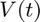 со временем:

где 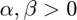.
Стацонарные точки
Точка 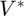 называется стационарной, если 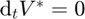, то есть
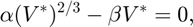
Таким образом, у данного уравнения есть две стационарные точки:
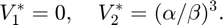
Численное решение уравнения фон Берталанфи
Зададим параметры задачи
alpha = 1; beta = 1;
И несколько начальных положений 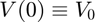:
V_0 = [2.2, .25, .05];
Далее, зададим время интегрирования 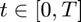, 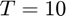:
T = 10; tspan = [0, T];
Для численного интегрировании системы, восвользуемся функцией ode45.
Данная функции имеет три аргумента:
- Интегрируемая функция (система) odefun, представимая как 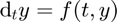 как function handle или как отдельная функция function_name.m.
- Интервал интегрирования tspan в виде массива из двух элементов [start end], или собственной сетки linspace(0, T, 51).
- Начального значения y0 (может быть вектором).
[t, V] = ode45(@(t, y) alpha*y.^(2/3) - beta*y, tspan, V_0);
res = table(t, V, VariableNames={'t, time', 'V, paths'});
[head(res, 5); tail(res, 5)]
ans =
10×2 table
t, time V, paths
________ ______________________________
0 2.2 0.25 0.05
0.029303 2.1852 0.25431 0.052542
0.058606 2.1706 0.25862 0.055142
0.087909 2.1562 0.26294 0.0578
0.11721 2.1421 0.26726 0.060515
9.7033 1.0359 0.95691 0.92722
9.7775 1.035 0.95795 0.92895
9.8516 1.0342 0.95896 0.93065
9.9258 1.0333 0.95995 0.9323
10 1.0325 0.96092 0.93392
Визуализация
figure(1); plot(t, V)
Отобразим ненулевую стационарную точку
line([0 T], [(alpha/beta)^3, (alpha/beta)^3], 'LineStyle', '--', 'Color', 'red');
Финальные штрихи
grid on; xlabel('$t$', Interpreter = "latex", FontSize = 14); ylabel('$V$', Interpreter = "latex", FontSize = 14); tl = title('$\dot{V} = \alpha V^{2/3} - \beta V$', Interpreter = "latex"); tl.FontSize = 14; subtitle(['$\alpha = ' num2str(alpha), ', \beta = ', num2str(beta), '$'], Interpreter = "latex");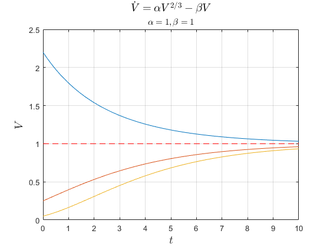